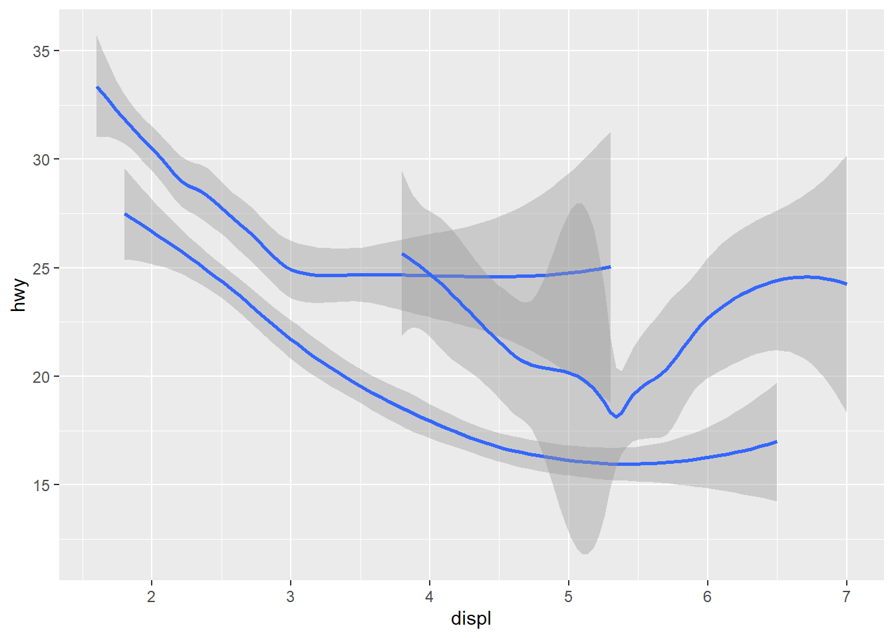
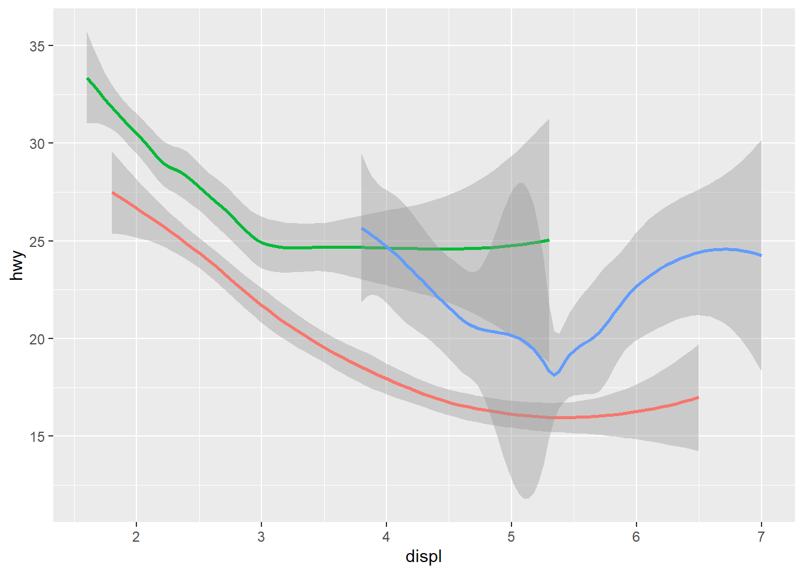
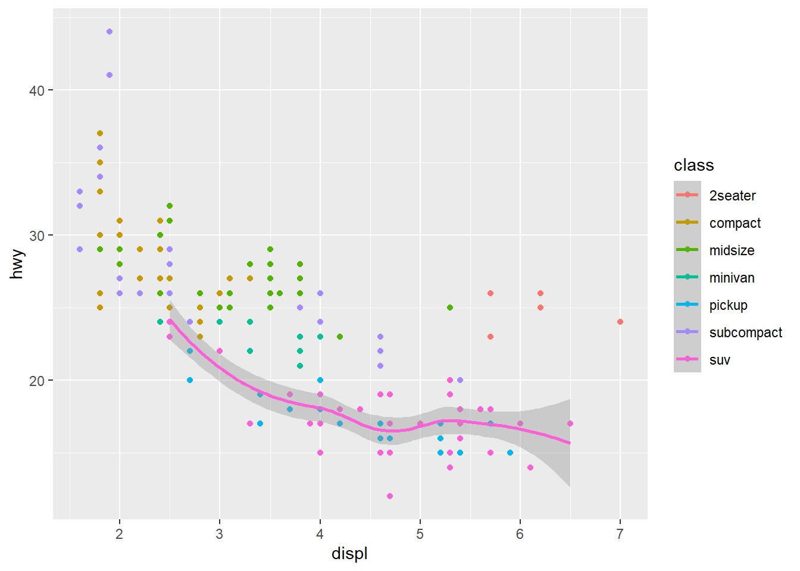
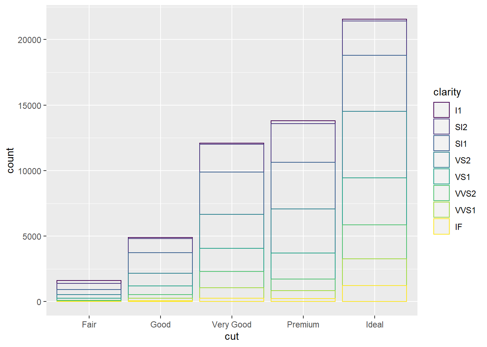
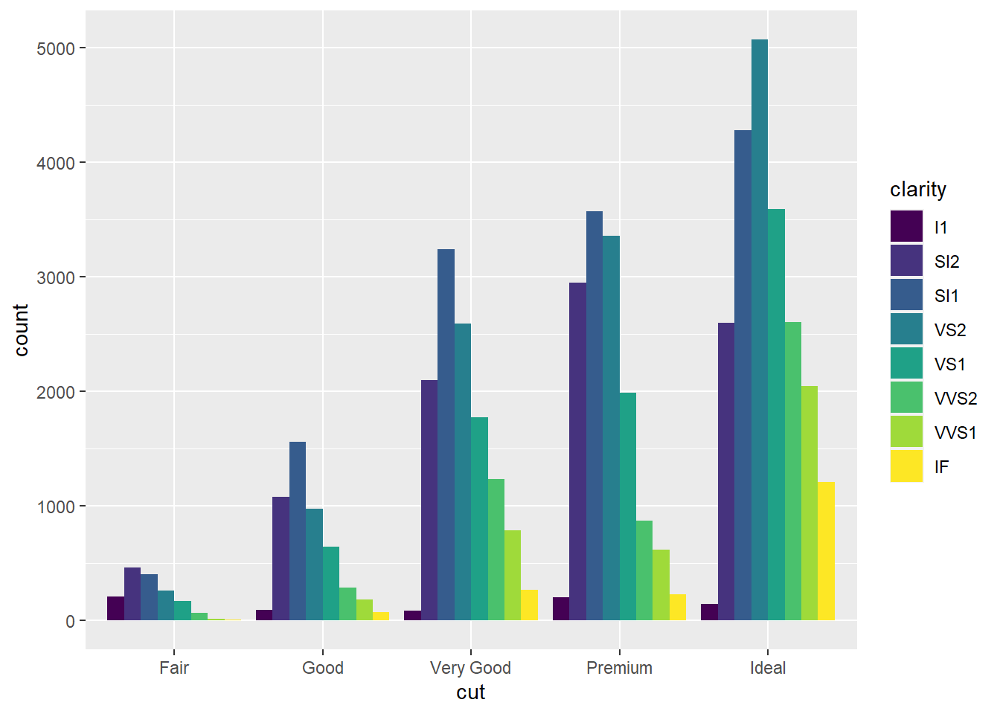

2 Visualización
Recuerda, trabajaremos en un script de R, no en la Consola. Además lo haremos de forma segura y organizada creando un RStudio Project:
- Ir a File > New Project…
- Podemos crear un nuevo directorio donde guardar nuestros scripts, figuras, datos, etc.;
- Por ejemplo, en el Escritorio creamos el proyecto “intro_R”;
- Siempre que trabajemos en este proyecto, “intro_R” será nuestro Working Directory
- Ahora, creamos un nuevo script “plots_mpg.R” y a programar!
2.1 Paquetes
Necesitamos cargar el paquete tidyverse:
library(tidyverse)## -- Attaching packages --------------------------------------- tidyverse 1.3.0 --## v ggplot2 3.3.3 v purrr 0.3.4
## v tibble 3.0.6 v dplyr 1.0.3
## v tidyr 1.1.2 v stringr 1.4.0
## v readr 1.4.0 v forcats 0.5.1## -- Conflicts ------------------------------------------ tidyverse_conflicts() --
## x dplyr::filter() masks stats::filter()
## x dplyr::lag() masks stats::lag()Notamos que este comando carga a su vez una serie de paquetes, no solo uno. Los conflictos son importantes a tener en cuenta porque indican que dos paquetes diferentes comparten el mismo nombre para una función. Por ejemplo, la función select está repetida tanto en el paquete dplyr como en el paquete MASS. Si cargamos ambos paquetes en nuestro script, entonces para evitar conflictos debemos especificar dplyr::select(...) o MASS::select(...).
2.2 Datos
Vamos a trabajar con los data frames mpg:
mpg## # A tibble: 234 x 11
## manufacturer model displ year cyl trans drv cty hwy fl class
## <chr> <chr> <dbl> <int> <int> <chr> <chr> <int> <int> <chr> <chr>
## 1 audi a4 1.8 1999 4 auto(l~ f 18 29 p comp~
## 2 audi a4 1.8 1999 4 manual~ f 21 29 p comp~
## 3 audi a4 2 2008 4 manual~ f 20 31 p comp~
## 4 audi a4 2 2008 4 auto(a~ f 21 30 p comp~
## 5 audi a4 2.8 1999 6 auto(l~ f 16 26 p comp~
## 6 audi a4 2.8 1999 6 manual~ f 18 26 p comp~
## 7 audi a4 3.1 2008 6 auto(a~ f 18 27 p comp~
## 8 audi a4 quat~ 1.8 1999 4 manual~ 4 18 26 p comp~
## 9 audi a4 quat~ 1.8 1999 4 auto(l~ 4 16 25 p comp~
## 10 audi a4 quat~ 2 2008 4 manual~ 4 20 28 p comp~
## # ... with 224 more rowsy diamonds de ggplot2:
head(diamonds, n = 10)## # A tibble: 10 x 10
## carat cut color clarity depth table price x y z
## <dbl> <ord> <ord> <ord> <dbl> <dbl> <int> <dbl> <dbl> <dbl>
## 1 0.23 Ideal E SI2 61.5 55 326 3.95 3.98 2.43
## 2 0.21 Premium E SI1 59.8 61 326 3.89 3.84 2.31
## 3 0.23 Good E VS1 56.9 65 327 4.05 4.07 2.31
## 4 0.290 Premium I VS2 62.4 58 334 4.2 4.23 2.63
## 5 0.31 Good J SI2 63.3 58 335 4.34 4.35 2.75
## 6 0.24 Very Good J VVS2 62.8 57 336 3.94 3.96 2.48
## 7 0.24 Very Good I VVS1 62.3 57 336 3.95 3.98 2.47
## 8 0.26 Very Good H SI1 61.9 55 337 4.07 4.11 2.53
## 9 0.22 Fair E VS2 65.1 61 337 3.87 3.78 2.49
## 10 0.23 Very Good H VS1 59.4 61 338 4 4.05 2.39Un data frame es una colección rectangular de datos donde las variables están organizadas por columnas y las observaciones por filas. Si ejecutamos ?mpg (o ?diamonds) el panel de Ayuda brinda una descripción de los datos.
2.3 Visualización con R base
Nos vamos a concentrar en las variables displ y hwy:
plot(mpg$displ, mpg$hwy)
Esto es un diagrama de dispersión. Si hacemos ?plot vemos las características que podemos variar. Por ejemplo:
plot(mpg$displ, mpg$hwy,
main = "Consumo de combustible",
xlab = "Cilindrada (litros)",
ylab = "Consumo (millas por galón)",
pch = 5,
col = "red")2.4 Visualización con ggplot2
El modelo básico para crear un ggplot tiene la forma:
ggplot(data = <DATA>) +
<GEOM_FUNCTION>(mapping = aes(<MAPPINGS>))Así que para emular el gráfico previo hacemos:
ggplot(data = mpg) +
geom_point(mapping = aes(x = displ, y = hwy))
2.4.1 Ejercicios
- Hacer el diagrama de dispersión de
hwyvs.cyl¿qué crees del gráfico obtenido?
R/
ggplot(mpg, aes(x = cyl, y = hwy)) +
geom_point()
- ¿Qué pasa si hacemos el diagrama de
classvs.drv? ¿por qué crees que hay menos puntos?
R/
Ambas son categóricas, por tanto, no es un buen plot.
ggplot(mpg, aes(x = class, y = drv)) +
geom_point()
2.4.2 Cambiando la estética
Habréis notado la instrucción aes( x = ..., y = ...). Si vamos a la ayuda (presionando F1 una vez que el cursos está sobre la función deseada) notaremos que corresponde al aesthetic mapping de ggplot. Además de definir qué va en el eje x y qué va en el eje y, podemos incluir más información de los datos en nuestro plot, por ejemplo, definiendo un color, forma o tamaño diferente en función del tipo de vehículo (variable class). Veamos un ejemplo, asignando un color diferente para cada tipo de vehículo:
ggplot(data = mpg) +
geom_point(mapping = aes(x = displ, y = hwy, color = class))
Notar que para fijar las características de forma manual debemos escribimos la instrucción fuera de aes():
ggplot(data = mpg) +
geom_point(mapping = aes(x = displ, y = hwy), color = "red")2.4.2.1 Ejercicios
- ¿Qué pasa si en lugar de
color, usamosalpha,shapeosize?
R/
Explora con algún ejemplo en el que uses color y cambia a alpha, shape o size…
- ¿Qué pasa al asignar una variable continua (e.g.
cty) acolor,sizeoshape? Hint: para el caso deshapevisita https://ggplot2.tidyverse.org/articles/ggplot2-specs.html#point-1.
R/
ggplot(mpg, aes(x = displ, y = hwy, colour = cty)) +
geom_point()
ggplot(mpg, aes(x = displ, y = hwy, size = cty)) +
geom_point()
shape no funcionará porque no podemos pasarle un argumento continuo. Intenta con este ejemplo:
ggplot(mpg, aes(x = displ, y = hwy, shape = cty)) +
geom_point()- ¿Qué pasa si asignamos la misma variable continua (e.g.
cty) acolorysizea la vez?
R/
Simplemente estaremos construyendo un plot con información redundante:
ggplot(mpg, aes(x = displ, y = hwy, colour = cty, size = cty)) +
geom_point()
Visita la ayuda
?geom_point(también https://ggplot2.tidyverse.org/reference/geom_point.html) y explora los diferentes aesthetic que puedes especificar.Agrega al aesthetic de tu plot la expresión
colour = displ < 5. Esto ya no es una variable si no una expresión que devuelve un booleano. ¿Puedes explicar el plot resultante?
R/
Es equivalente a agregar una nueva etiqueta que diferencia las observaciones que cumplen displ < 5 y displ >= 5
ggplot(mpg, aes(x = displ, y = hwy, colour = displ < 5)) +
geom_point()
2.4.3 Las facetas
Habréis notado que en la sección anterior estábamos representando 3 dimensiones (3D) en el plano (que tiene solo 2D). Con las facetas (facets) particionamos un gráfico de acuerdo a cierta (o ciertas) variables.
Para crear facetas de acuerdo a una única variable usamos facet_wrap(). El primer argumento será una “fórmula” de R. Las fórmulas son una estructura del lenguaje, formadas con el símbolo ~ y que permite relacionar variables o transformaciones de variables (i.e. sumas, logaritmos o la identidad). En este caso, debemos tener cuidado de pasar a facet_wrap() una variable discreta:
ggplot(data = mpg) +
geom_point(mapping = aes(x = displ, y = hwy)) +
facet_wrap(~ class, nrow = 2)
Si queremos particionar nuestro gráfico de acuerdo a una combinación de variables usamos facet_grid. Por ejemplo:
ggplot(data = mpg) +
geom_point(mapping = aes(x = displ, y = hwy)) +
facet_grid(drv ~ cyl)
2.4.3.1 Ejercicios
- ¿Qué hemos hecho en el gráfico de arriba? ¿Por qué hay facetas vacías? Hint: intenta relacionar tus impresiones con el siguiente gráfico:
ggplot(data = mpg) +
geom_point(mapping = aes(x = drv, y = cyl)) 
R/
No hay observaciones con todas las combinaciones de posibles niveles de ambas variables categóricas.
- Explica el uso del punto
.en los siguientes plots:
ggplot(data = mpg) +
geom_point(mapping = aes(x = displ, y = hwy)) +
facet_grid(drv ~ .)
ggplot(data = mpg) +
geom_point(mapping = aes(x = displ, y = hwy)) +
facet_grid(. ~ cyl)

R/
El primero arregla los plots por filas y el segundo por columnas.
- ¿Para qué sirven los argumentos
nrowyncol? ¿En qué tipo de facetas se pueden usar? Explora la ayudafacet_wrapyfacet_grido el manual en https://ggplot2.tidyverse.org/reference/index.html.
ggplot(data = mpg) +
geom_point(mapping = aes(x = displ, y = hwy)) +
facet_wrap(~class, nrow = 4)
R/
Ajusta el número de filas en las que arreglamos los plots.
- ¿Qué pasa si usamos una variable continua para hacer facetas? Intenta hacerlo con
cty.
ggplot(mpg, aes(x = displ, y = hwy)) +
geom_point() +
facet_grid(. ~ cty)
R/
No es muy útil tener tantos paneles. En este caso, los plots son medianamente interpretables porque la variable cty tiene pocos valores únicos.
2.4.4 Objetos geométricos geoms
Hasta ahora solo hemos hecho diagramas de dispersión usando geom_point. En ggplot es muy sencillo cambiar el tipo de gráfico cambiando a otro geom (objeto geométrico). Aún así, los argumentos de cada geom pueden variar un poco (parecido a lo que pasa entre facet_wrap y facet_grid). Por ejemplo, si en lugar de un diagrama de dispersión quisiéramos un gráfico de líneas:
ggplot(data = mpg) +
geom_line(mapping = aes(x = displ, y = hwy))
Este gráfico no es muy útil (además de ser estéticamente horrible). Sin embargo tanto este como el diagrama de dispersión parecen indicar que a mayor cilindrada (displ) mayor consumo (menor cantidad de millas autopista por galón hwy), excepto para algunos vehículos de gran cilindrada (los puntos más a la derecha). Sin dudas, debe haber una “curva suave” que pueda describir esta relación entre hwy y displ… así que es un buen momento para echarle un ojo a “la chuleta” (Cheatsheet) del paquete ggplot. Te adelanto que la curva se puede estimar con geom_smooth:
ggplot(data = mpg) +
geom_point(mapping = aes(x = displ, y = hwy, colour = class), alpha = 0.4, size = 3) +
geom_smooth(mapping = aes(x = displ, y = hwy)) +
xlab('Cilindrada (litros)') +
ylab('Consumo (millas por galón)') +
theme_light()## `geom_smooth()` using method = 'loess' and formula 'y ~ x'En este caso ya hemos añadido dos diferentes geoms a un mismo plot, además hemos modificado los nombres de los ejes, hemos modificado un poco las estética de los puntos y hemos usado un “tema” (theme) con fondo blanco. Aún así, los tipos de vehículos son muchos y es complicado establecer una relación entre el tipo de vehículo y la monotonía de la curva suave. Vamos a ver qué pasa si hacemos el “suavizado” según el tipo de tracción (drv):
ggplot(data = mpg) +
geom_smooth(mapping = aes(x = displ, y = hwy, linetype = drv))## `geom_smooth()` using method = 'loess' and formula 'y ~ x'
Fíjate que ahora estamos describiendo la relación entre cilindrada y consumo 3 curvas suaves que corresponden al tipo de tracción (r: rear/trasera, f: front/delantera y 4: ambos ejes delantero y trasero). Hemos usado linetype para diferenciar la estética de las 3 clases que describe drv… si tienes dudas consulta los argumentos estéticos de geom_smooth https://ggplot2.tidyverse.org/reference/geom_smooth.html#aesthetics. Si usamos, por ejemplo, group o color:
# suavizar de acuerdo a los niveles de 'drv'
# agrupa, pero no diferencia con colores o tipos de línea
ggplot(data = mpg) +
geom_smooth(mapping = aes(x = displ, y = hwy, group = drv))## `geom_smooth()` using method = 'loess' and formula 'y ~ x'# suavizar de acuerdo a los niveles de 'drv'
# agrupa y diferencia con colores
ggplot(data = mpg) +
geom_smooth(
mapping = aes(x = displ, y = hwy, color = drv),
show.legend = FALSE
)## `geom_smooth()` using method = 'loess' and formula 'y ~ x'
Podemos además ir un poco más lejos e intentar hacer el suavizado (estimar la curva suave) para un tipo de vehículo determinado (de acuerdo a los niveles de class). Por ejemplo, en el caso de vehículos suv:
ggplot(data = mpg) +
geom_point(mapping = aes(x = displ, y = hwy, color = class)) +
geom_smooth(data = filter(mpg, class == "suv"),
mapping = aes(x = displ, y = hwy, color = class),
se = FALSE)## `geom_smooth()` using method = 'loess' and formula 'y ~ x'2.4.4.1 Ejercicios
- ¿Cuál será la diferencia entre estos dos gráficos?
ggplot(data = mpg, mapping = aes(x = displ, y = hwy)) +
geom_point() +
geom_smooth()
ggplot() +
geom_point(data = mpg, mapping = aes(x = displ, y = hwy)) +
geom_smooth(data = mpg, mapping = aes(x = displ, y = hwy))R/
Ninguna diferencia, aunque podemos hacerlo más legible:
ggplot(data = mpg, mapping = aes(x = displ, y = hwy)) +
geom_point() +
geom_smooth()De acuerdo a tus impresiones, reescribe el código que hace el suavizado solo para los vehículos suv. El objetivo es lograr un código legible y sin argumentos innecesarios. ¿Qué produce la instrucción se = FALSE?
R/
ggplot(data = mpg, mapping = aes(x = displ, y = hwy, color = class)) +
geom_point() +
geom_smooth(data = filter(mpg, class == "suv"),
se = FALSE)## `geom_smooth()` using method = 'loess' and formula 'y ~ x'
ggplot(data = mpg, mapping = aes(x = displ, y = hwy, color = class)) +
geom_point() +
geom_smooth(data = filter(mpg, class == "suv"),
se = TRUE)## `geom_smooth()` using method = 'loess' and formula 'y ~ x'
- Reproducir los siguientes gráficos:
ggplot(mpg, aes(x = displ, y = hwy)) +
geom_point() +
geom_smooth(se = FALSE, )
ggplot(mpg, aes(x = displ, y = hwy)) +
geom_smooth(mapping = aes(group = drv), se = FALSE) +
geom_point()
ggplot(mpg, aes(x = displ, y = hwy, colour = drv)) +
geom_point() +
geom_smooth(se = FALSE)
ggplot(mpg, aes(x = displ, y = hwy)) +
geom_point(aes(colour = drv)) +
geom_smooth(se = FALSE)
ggplot(mpg, aes(x = displ, y = hwy)) +
geom_point(aes(colour = drv)) +
geom_smooth(aes(linetype = drv), se = FALSE)
ggplot(mpg, aes(x = displ, y = hwy)) +
geom_point(size = 4, color = "white") +
geom_point(aes(colour = drv))
ggplot(mpg, aes(x = displ, y = hwy)) +
geom_point(aes(fill = drv),
shape = 21,
colour = "white",
size = 2,
stroke = 3)


R/
Códigos incluidos con los gráficos.
2.4.5 Transformaciones estadísticas
En la sección anterior ggplot hizo algunas transformaciones por nosotros. Está claro que la “curva suave” con la que hemos trabajado no forma parte de mpg, sino que es una estimación a partir de una regresión lineal, local (loess) o un spline. De hecho, muchos de los geoms de ggplot hacen transformaciones estadísticas por nosotros:
- los gráficos de barras, histogramas y polígonos de frecuencia construyen intervalos (bins) y cuentan el número de observaciones que “caen” dentro de estos;
- los smoothers (¿suavizadores? :| ) como ya hemos visto;
- los diagramas de cajas (boxplots) calculan estadísticos importantes para entender la distribución de cierta variable continua (mediana, media, cuartiles, outliers).
Vamos a hacer algunos diagramas de barras con los datos diamonds:
# geom_bar tiene a stat_count como el "stat" por defecto:
ggplot(data = diamonds) +
geom_bar(mapping = aes(x = cut))
# stat_count tiene a geom_bar como el "geom" por defecto:
ggplot(data = diamonds) +
stat_count(mapping = aes(x = cut))

También lo podemos hacer “a mano” si contamos los elementos de cada clase y cambiamos el stat por defecto de geom_bar:
summary(diamonds$cut)## Fair Good Very Good Premium Ideal
## 1610 4906 12082 13791 21551mi_df <- data.frame( cut = c("Fair", "Good", "Very Good", "Premium", "Ideal"),
freq = c(1610, 4906, 12082, 13791, 21551 ))
print(mi_df)## cut freq
## 1 Fair 1610
## 2 Good 4906
## 3 Very Good 12082
## 4 Premium 13791
## 5 Ideal 21551ggplot(data = mi_df) +
geom_bar(mapping = aes(x = cut, y = freq), stat = "identity")
Notarás que son los mismos diagramas de barras, salvo por el orden de los cortes (ahora están ordenados alfabéticamente). Esto se podría arreglar convirtiendo mi_df$cut a clase factor y reordenando los niveles… pero ya lo veremos luego :)
Podemos también añadir color, modificar la transparencia de las barras, etc.:
ggplot(data = diamonds) +
geom_bar(mapping = aes(x = cut, colour = cut), alpha = 0.5)
ggplot(data = diamonds) +
geom_bar(mapping = aes(x = cut, fill = cut))
2.4.5.1 Ejercicios
- ¿Qué hace el siguiente código?
ggplot(data = diamonds) +
geom_bar(mapping = aes(x = cut, y = stat(prop), group = 1))
- Interpreta los resultados de ejecutar:
ggplot(data = diamonds) +
stat_summary(
mapping = aes(x = cut, y = depth),
fun.min = min,
fun.max = max,
fun = median
)
R/
Te muestran la profundidad mínima, máxima y la mediana. No es tan útil como un diagrama de cajas (boxplot).
- ¿Cuál es la diferencia entre
geom_barygeom_col? ¿Qué datos necesitaríamos introducir en cada función para obtener el mismo diagrama de barras en cada caso?
R/
geom_col()tiene un “stat” diferente ageom_bar()- El stat por defecto de
geom_col()esstat_identity() - El stat por defecto de
geom_bar()esstat_count()
2.4.6 Ajuste de posición y sistemas de coordenadas
Los diagramas de barras también permiten añadir una tercera variable (además de la frecuencia en el eje y y la clase correspondiente en el eje x), como ya hemos hecho con los diagramas de dispersión. Por ejemplo si utilizamos la variable clarity para “rellenar” las barras:
ggplot(data = diamonds) +
geom_bar(mapping = aes(x = cut, fill = clarity))
Si variamos el parámetro de posición (position adjustment) podemos hacer más fácil la comparación de acuerdo a la claridad de los diamantes (variable clarity):
# todas las barras iguales para comparar proporciones de claridad
# de acuerdo al tipo de corte:
ggplot(data = diamonds) +
geom_bar(mapping = aes(x = cut, fill = clarity), position = "fill")
# frecuencias por tipo de corte y claridad:
ggplot(data = diamonds) +
geom_bar(mapping = aes(x = cut, fill = clarity), position = "dodge")

Hay otro tipo de ajuste (position = "jitter") que no tiene utilidad para los diagramas de barra, pero sí para los diagramas de dispersión y de cajas (boxplots). Por ejemplo, en el caso de los datos mpg es muy difícil notar que muchos de los puntos del diagrama hwy vs. displ están superpuestos. Con jitter podemos añadir un poco de “ruido” a las observaciones para que así los puntos del diagrama aparezcan más dispersos y así tener una idea más acertada del tamaño muestral:
p <- ggplot(data = mpg, mapping = aes(x = displ, y = hwy))
# con algo transparencia los superpuestos producen un color oscuro:
p + geom_point(alpha = 0.3, size = 3)
# dispersamos con "jitter":
p + geom_point(alpha = 0.3, size = 3, position = "jitter")Otra opción es usar geom_count para “contar” los puntos solapados:
p + geom_point() +
geom_count()2.4.6.1 Ejercicios
- Un tercer parámetro de posición para los diagramas de barras es
position = "identity". Modifica el ajuste de posición del siguiente código y compara la idoneidad del mismo con el obtenido paraposition = "dodge". Hint: considera añadir algo de transparencia (e.g.alpha = 0.5) o quitar el relleno por completo (i.e.fill = NA).
R/
ggplot(data = diamonds) +
geom_bar(mapping = aes(x = cut, fill = clarity))
ggplot(data = diamonds) +
geom_bar(mapping = aes(x = cut, color = clarity),
alpha = 0.5, fill = NA)
ggplot(data = diamonds) +
geom_bar(mapping = aes(x = cut, fill = clarity), position = "dodge")
- Los diagramas de cajas se logran con
geom_boxplot. Este tipo de gráficos permiten comparar las distribuciones de una variable continua para diferentes grupos o clases. Por ejemplo, para los datosmpgpodemos comparar la distribución del consumo de acuerdo al tipo de tracción:
p_box <- ggplot(data = mpg, aes(x = drv, y = hwy)) +
geom_boxplot()
p_boxConsulta la ayuda de geom_jitter e incluye las observaciones como puntos superpuestos al diagrama de cajas. Deberías obtener algo como esto:
R/
ggplot(data = mpg, aes(x = drv, y = hwy)) +
geom_boxplot(outlier.colour = "hotpink") +
geom_jitter(alpha = 0.3, width = 0.1) +
theme_light()
- Modifica
p_boxpara que represente también la información relativa al tipo de vehículo (variableclass). ¿Puedes identificar el ajuste de posición por defecto degeom_boxplot?
R/
p_box2 <- ggplot(data = mpg, aes(x = drv, y = hwy, color = class)) +
geom_boxplot()
p_box2Es “dodge2”, que es un shortcut para “position_dodge2”. Lo que hace es mover las cajas en la horizontal (sin afectar la vertical), para evitar el solapamiento de cajas.
- Cambia la orientación de los diagramas de cajas de verticales a horizontales. Hint: consulta la documentación de
coord_flip.
R/
p_box2 <- ggplot(data = mpg, aes(x = drv, y = hwy, color = class)) +
geom_boxplot() +coord_flip()
p_box2- Consulta la documentación de
coord_polary construye un diagrama circular (“de pastel”) de la variable tipo de tracción (drv).
R/
pie <- ggplot(mpg, aes(x = factor(1), fill = factor(drv))) +
geom_bar(width = 1)
pie + coord_polar(theta = "y")2.5 Resumen
En las secciones anteriores has asimilado la “gramática estratificada de los gráficos” (The layered grammar of graphics) de ggplot. Aunque no lo parezca ahora, ya eres capaz de construir cualquier tipo de gráfico en 2D. Resumiendo, dispones de un modelo con 7 parámetros a definir (no necesitas definirlos todos) y tantas capas de geoms como necesites:
ggplot(data = <DATA>) +
<GEOM_FUNCTION>(
mapping = aes(<MAPPINGS>),
stat = <STAT>,
position = <POSITION>
) +
<COORDINATE_FUNCTION> +
<FACET_FUNCTION>Finalmente, podemos añadir otros 2 parámetros a este modelo que te permitirán modificar otros elementos necesarios a la hora de “comunicar” con tus gráficos (título, leyenda, etiquetado de los ejes, escala de los ejes, etc.):
ggplot(data = <DATA>) +
<GEOM_FUNCTION>(
mapping = aes(<MAPPINGS>),
stat = <STAT>,
position = <POSITION>
) +
<COORDINATE_FUNCTION> +
<FACET_FUNCTION> +
<SCALE_FUNCTION> +
<THEME_FUNCTION>2.5.0.1 Ejercicios
- Cambia la escala y tema de algunos de los gráficos que has desarrollado. Hint: en el Cheatsheet: Data Visualization with ggplot2 tienes un resumen muy completo de las herramientas que necesitas.